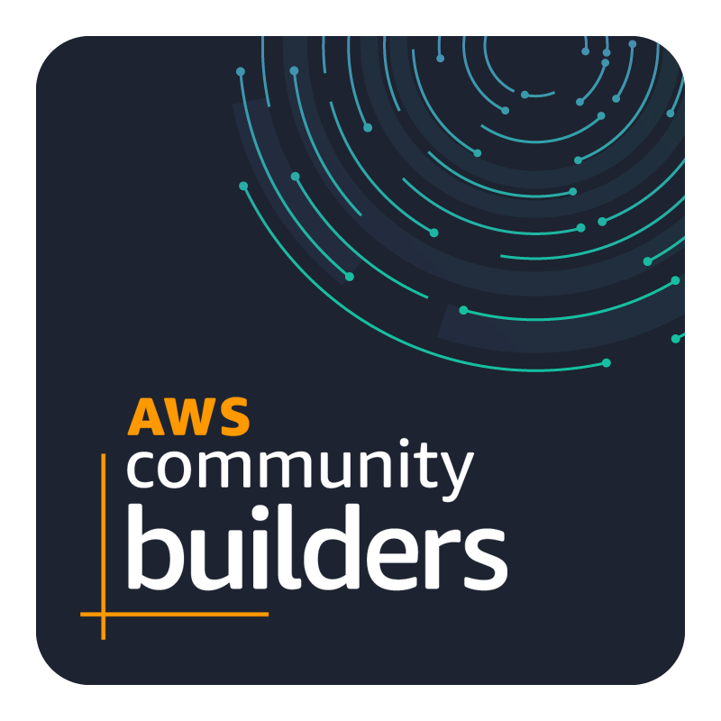
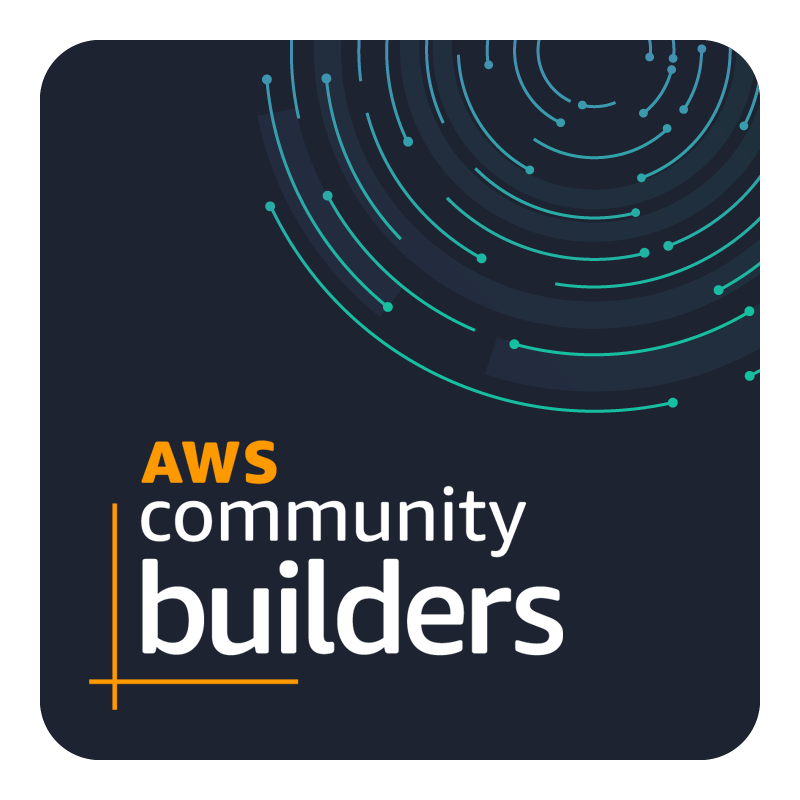

About Me
I am an AWS DevOps and Site Reliability Engineer (SRE) with over 4 years of experience. As an AWS Certified Solutions Architect and recognized AWS Community Builder, I bring extensive expertise in cloud infrastructure, automation, and system reliability.
My research focuses on the intersection of cloud computing, security, and automation, with a particular emphasis on cloud security, AI-driven threat detection, and innovative automation approaches like serverless computing and containerization.
 

Skills
- Cloud Infrastructure: AWS, Azure, Git, Atlassian
- Servers: Web, File, Database, Mail, SSH, Virtualization
- Automation: Jenkins, Cloudformation, Terraform, Ansible, CodePipeline, GitHub, GitLab
- Containerization: ECS, EKS, ECR, DockerHub, Kubernetes, Nexus
- Logging and Monitoring: Datadog, Cloudwatch, Cloudtrail, Splunk, Datadog, Site24x7, ELK, Nagios
- Scripting: Python, Shell, JavaScript, Groovy
Recent News
Peer-reviewed Journal Articles
[1] Khanal, D. D., and Maharjan, S. (2024). Comparative Security and Compliance
Analysis of Serverless Computing Platforms: Aws Lambda, Azure Functions, and
Google Cloud Functions. i-manager's Journal on Cloud Computing, 11(1),
36-42. "https://doi.org/10.26634/jcc.11.1.21044"
Paper in Progress
AI-Driven Autoscaling in Microservices: Enhancing Reliability While Maintaining Scalability
Professional Experience
UBA Solutions (A Monotype Partner Company)
Site Reliability Engineer | Dec 2022–Present
- Acquired extensive knowledge in advanced monitoring, logging, and alerting tools.
- Worked extensively with various AWS cloud platform services.
- Maintained 99.95% uptime for an enterprise-level application.
- Managed proactive monitoring for 100,000 users per hour with over 150,000 fonts and foundries.
Pagoda Labs (Kwant AI)
DevOps Engineer | April 2022–Dec 2022
- Implemented AWS DevOps using ECS, Fargate, EC2, and other services.
- Implemented Lambda function for real-time error logging to Slack.
- Maintained 99.5% uptime of legacy application, database, and Linux servers.
Cloudlaya
Software Engineer | Associate Cloud and DevOps | May 2020–March 2022
- Maintained hundreds of websites on WHM and CPanel.
- Architected AWS solutions for diverse clients.
- Automated client websites using Jenkins, CodePipeline, and CodeDeploy.
Education
PRIME COLLEGE
Bachelors in Computer Science and Information Technology (BSC.CSIT) | 2021
Academic Achievement - 75.17% | College Topper - Final Semester (86%)
Certifications
Community Involvement
AWS Community Builder in the Container category
As an AWS Community Builder in the Container category, I've accessed global expert support, engaged in peer learning, and received AWS credits. Enjoying benefits from CloudAcademy, I provide feedback for service enhancement. Plus, direct insights from AWS product teams keep me updated on new features and services.